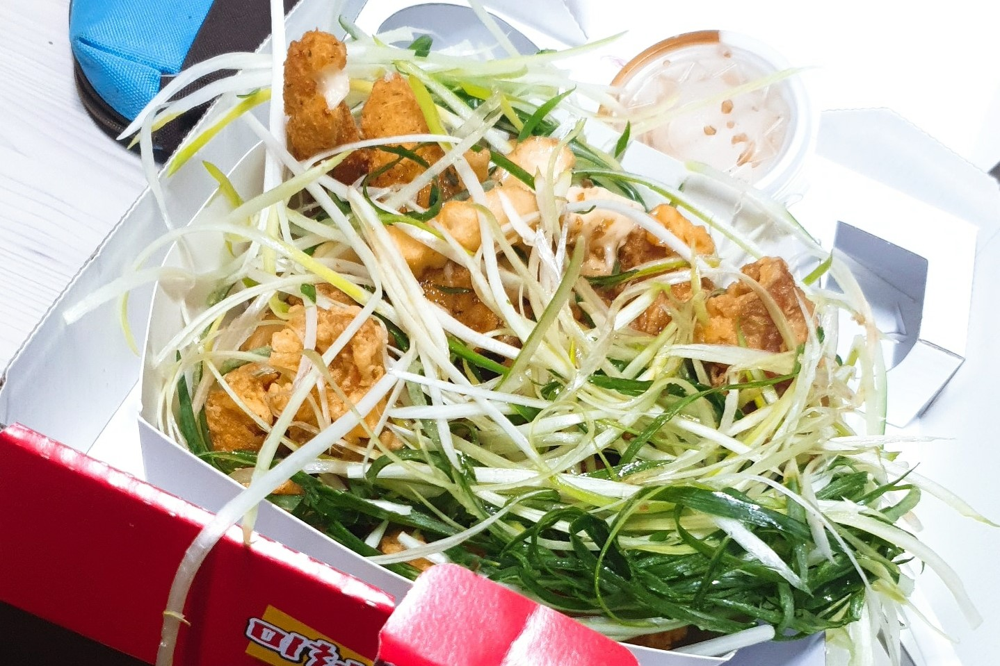
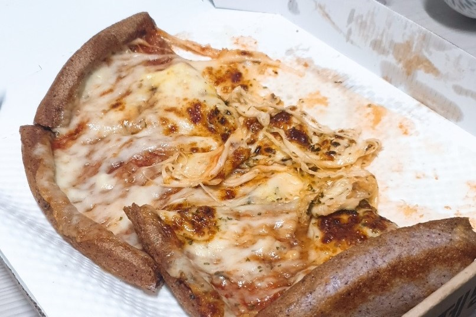
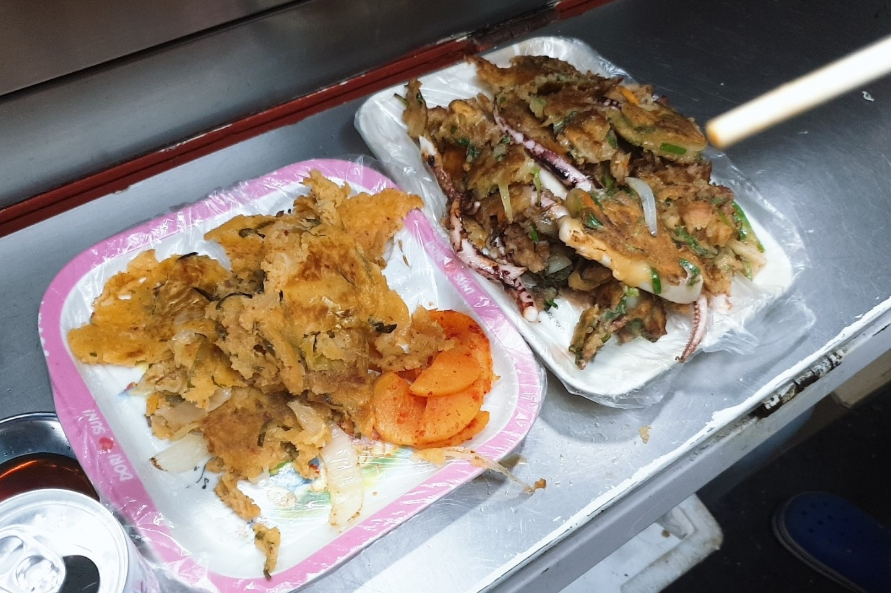

미쳐버린 파닭
위치: 관악구 대학7길 53 (신림동), 서울산업정보학교·삼성교 정류장 근처
관악구에서 파닭을 제일 잘 튀기는 치킨집이 아닐까 싶습니다. 양도 많고, 소스랑 파도 부족하지 않게 듬뿍듬뿍 주는 집입니다. 양념, 간장, 불닭, 크림, 카레, 마라, 치즈, 허니머스터드 등 다양한 맛을 고를 수 있는 것도 장점입니다.
서오릉 피자
위치: 관악구 남부순환로 1925 (봉천동), 낙성대역 5번 출구 근처
8천원의 싼 가격에, 요일마다 다른 레귤러 사이즈 피자를 먹을 수 있습니다. 토요일에는 치즈듬뿍피자가 나오는데, 사진을 보시면 아시겠지만 피자가 찌그러질 정도로 치즈가 많습니다. 가성비 최고에요!
서울대역 전
위치: 서울대입구역 3번 출구로 나오면 바로 보이는 포장마차 (봉천동)
김치, 감자, 부추, 오징어 등 다양한 전을 정말 바삭바삭하게 튀겨 주는 포장마차입니다. 전 하나는 2000원밖에 안 하는데 양이 많아, 배고플 때 여기서 전 2개 주문해서 먹으면 정말 배부릅니다. 덕분에 서울대입구역에서 녹두거리로 향하는 5515번 버스는, 항상 이 포장마차의 전 냄새로 가득합니다...
탕수육쌀롱

위치: 관악구 서림길 13 (신림동), 쑥고개입구 정류장 근처
'김치피자탕수육'이라는 독특한 음식을 맛볼 수 있는 곳입니다. 이름만 들었을 때는 '이게 뭐지?' 싶지만, 실제로 먹어 보면 천국의 맛이라는 것을 알 수 있게 됩니다. 치즈는 탕수육의 쫄깃함을 더해 주고, 김치는 탕수육의 느끼함을 덜어 줍니다.